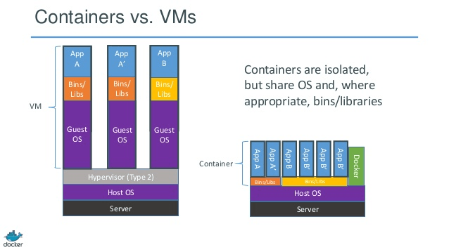

Docker, introduction à la conteneurisation.
Introduction
Pourquoi utiliser Docker ?
- Déploiement rapide.
- Même environnement partout.
- Plus léger que les machines virtuelles.
- Facile à partager : une image = une application.
Le vocabulaire de base
- Une image => Modèle d'un conteneur (ex: Ubuntu, PHP + Apache, Windows Server).
- Conteneur => Instance "vivante" d'une image.
- Dockerfile => Script pour construire une image.
- docker-compose.yaml => est un outil qui permet de décrire, configurer et executer plusieurs conteneurs.
- Volume => Dossier partagé entre le PC et le conteneur.
- Docker Hub => Github des images Dockers.
